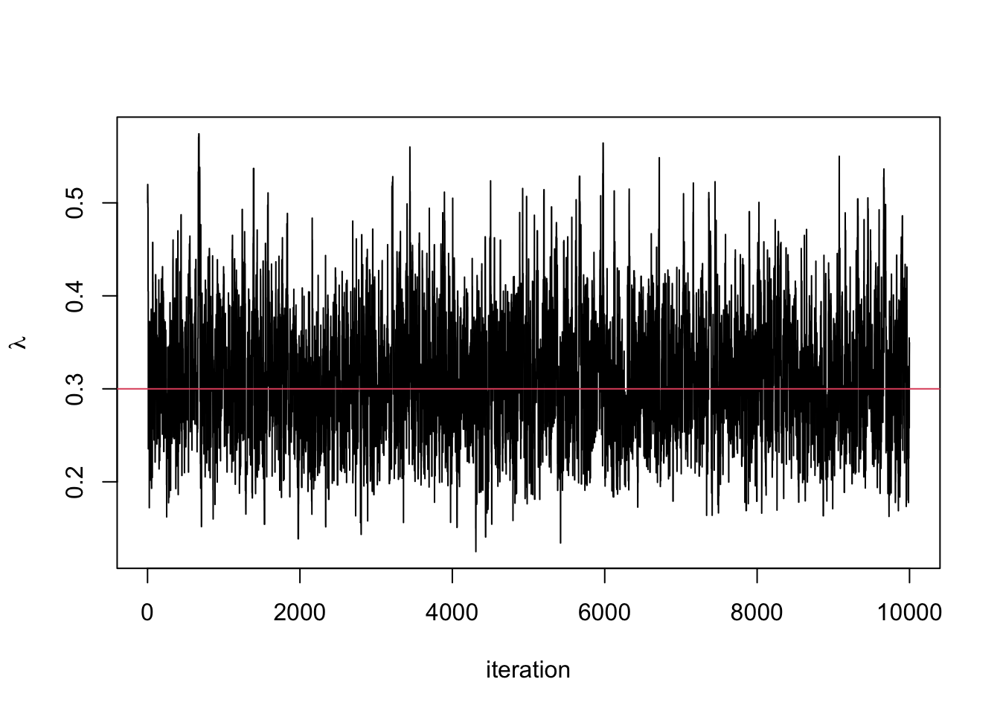

Chapter 5 Advanced computation
Now we have the tools of Bayesian inference and methods to sample from complex posterior distributions, we can start to look at more advanced methods and models. This chapter is split into two distinct parts, each showing a different method in Bayesian inference.
5.1 Data Augmentation
Real world data is often messy with data points missing, partially or completely unobserved. Two common ways to deal with are:
- Remove data points that are not completely observed. This throws away information and is likely to increase the overall uncertainty in the estimates.
- Replace data points that are not completely observed with estimates such as the sample mean. This is likely to underestimate the uncertainty as we are treating the observation as completely observed when it is not.
The Bayesian framework provides a natural way for dealing with missing, partially, or completely unobserved data. It allows us to treat the missing data points as random variables and infer the data points alongside the model parameters. This provides us with a method to quantify the uncertainty around our estimates of the missing data points.
In data augmentation, we distinguish between two likelihood functions.
Definition 5.1 The observed data likelihood function is the likelihood function of the observed data.
Definition 5.2 The complete data likelihood function is the likelihood function of the observed data and any missing or censored data had they been fully observed.
The difference between the two likelihood functions is that the complete data likelihood function is the functions had we observed everything we want to observe. However, as the complete data likelihood function contains data we didn’t fully observe, we can’t compute it. Instead we can only evaluate the observed data likelihood function.
In data augmentation, we start off with the observed data likelihood function and then augment this function by introducing variables that we want to have fully observed. This then gives us the complete data likelihood function.
5.1.1 Imputing censored observations
The first example we will look at is when data is censored. Instead of throwing away these observations, we will instead treat them as random variables and infer their values.
Example 5.1 A bank checks transactions for suspicious activities in batches of 1000. Denote the probability a transaction is suspicious by \(p\) and the number of suspicious transactions in a batch by \(Y\).
The bank checks five batches and observes \(y_1, \ldots, y_4\) suspicious transactions in the first four batches. Due to a computer error, the number of suspicious transactions in the final batch is not properly recorded, but is known to be less than 6.
The observed data likelihood functions is \[ \pi(y_1, \ldots, y_4, \tilde{y}_5 \mid p) = \left(\prod_{i=1}^4\begin{pmatrix} 1000 \\ y_i \end{pmatrix} p^{y_i}(1-p)^{1000 - y_i} \right)\left(\sum_{j=1}^5\begin{pmatrix} 1000 \\ j \end{pmatrix} p^{j}(1-p)^{1000 - j}\right). \] Placing a uniform prior distribution on \(p \sim U[0, 1]\) give the posterior distribution \[ \pi(p \mid y_1, \ldots, y_y, \tilde{y}_5)= \left(\prod_{i=1}^4\begin{pmatrix} 1000 \\ y_i \end{pmatrix} p^{y_i}(1-p)^{y_i} \right)\left(\sum_{j=1}^5\begin{pmatrix} 1000 \\ j \end{pmatrix} p^{j}(1-p)^{1000 - j}\right). \] Although we could sample from this distribution, it is not easy to work with. Instead, we can write down the complete data likelihood. This supposes we had observed \(y_5\) and is \[ \pi(y_1, \ldots, y_5 \mid p) = \prod_{i=1}^5\begin{pmatrix} 1000 \\ y_i \end{pmatrix} p^{y_i}(1-p)^{1000 - y_i} \] The posterior distribution is therefore \[ p \mid y_1, \ldots, y_5 \sim \hbox{Beta}\left(\sum_{i=1}^5 y_i + 1, 1001 - \sum_{i=1}^5 y_i\right). \]
The full conditional distribution of \(y_5\) given \(p\), the other data points an \(y_5 < 6\) is \[ \pi(y_5 = y \mid y_1, \ldots, y_4, y_5 < 1, p) = \frac{\begin{pmatrix} 1000 \\ y \end{pmatrix} p^{y}(1-p)^{1000 - y}}{\sum_{j=1}^{1000}\begin{pmatrix} 1000 \\ j \end{pmatrix} p^{j}(1-p)^{j}}, \qquad y < 6 \] We can use a Gibbs sampler alternating between sampling \(p\) and \(y_5\). The form of \(y_5\) is a truncated binomial distribution, which is not obvious how to sample from. There are two ways: i) use one of R’s inbuilt samplers, or ii) use the inverse transform method, but restrict the domain of the uniform distribution.
5.1.2 Imputing latent variables
Often there are variables that are cannot be observed, these may be hidden somehow or introduced to help with the modelling. Instead we can learn about this variable indirectly from the data.
A latent variable is a variable that cannot be observed.
A mixture model is an example of latent variables being useful.
Example 5.2 Royal Mail use image detection software to read postcodes on letters. A camera scans the front of an envelope and then records the barcode. This example is a very simplified version of how the system could work.
Suppose the machine is processing a bag of letters addressed to people in either B1 or B2 postcodes. The camera scans the first two characters of the postcode (B1 or B2) and records the proportion of the scanned image that is taken up by the characters. The picture below shows an example of what the scanned image looks like.

We introduce a latent variable \(z_i \sim \hbox{Bernoulli}(p)\) that describes if the characters on the \(i^{th}\) image are B1 or B2. The observation \(y_i\) is the proportion of the \(i^{th}\) image that is taken up by the characters. We observe \(y_i\), but want to estimate \(z_i\). The difficultly is there lack of one-to-one correspondence between the values \(y_i\) can take and the value \(z_i\). Due to the different handwriting and fonts used on envelopes, if the letter is going to B1 (\(Z = 1\)), then \(Y_i \sim N(0.7, 0.05^2)\) and if it is going to B2 (\(Z = 2\)), then \(Y_i \sim N(0.8, 0.02^2)\). The plot below shows the two densities and the overlap between them.
a <- seq(0.5, 0.9, 0.001)
x <- dnorm(a, 0.7, 0.05)
y <- dnorm(a, 0.8, 0.02)
plot(a, x, type = 'l', ylim = c(0, 20), xlab = expression(y), ylab = "density")
lines(a, y, lty = 2)
As the variables \(\boldsymbol{z}\) are latent, the observed data likelihood function is \[ \pi(\boldsymbol{y} \mid p) =\prod_{i=1}^N \left[ p\pi(y_i \mid \mu = 0.7, \sigma^2 = 0.05^2) + (1-p)\pi(y_i \mid \mu = 0.8, \sigma^2 = 0.02^2)\right]. \] Instead, it’s easier to work with the complete data likelihood function, supposing we had observed the variables \(\boldsymbol{z}\). This i given by \[\begin{align*} \pi(\boldsymbol{y}, \boldsymbol{z} \mid p) &= \begin{pmatrix} N_1 + N_2 \\ N_1\end{pmatrix}p^{N_1}(1-p)^{N_2} \prod_{i; z_i = 1}\pi(y_i \mid \mu = 0.7, \sigma^2 = 0.05^2) \\ &\times\prod_{i; z_i = 2}\pi(y_i \mid \mu = 0.8, \sigma^2 = 0.02^2), \end{align*}\] where \(N_1\) and \(N_2\) are the number of letters for B1 and B2 respectively. This form makes it much easier to derive the posterior distributions and estimate the parameter values.
We place a uniform prior distribution on the parameter \(p\), which gives the posterior distribution \[ p \mid \boldsymbol{y}, \boldsymbol{z} \sim \hbox{Beta}(N_1 + 1, N_2 + 1). \]
The distribution of \(z_i\) given the parameter \(p\) and the observation \(y_i\) can be derived using Bayes’ theorem \[ p^*_i = \pi(z = 1 \mid p, y_1) = \frac{p\pi(y_i \mid \mu = 0.7, \sigma^2 = 0.05^2)}{p\pi(y_i \mid \mu = 0.7, \sigma^2 = 0.05^2) + (1-p)\pi(y_i \mid \mu = 0.8, \sigma^2 = 0.02^2)}. \] The full conditional distribution is therefore \(z_i \mid \boldsymbol{y}, p \hbox{Bernoulli}(p^*_i)\).
An MCMC algorithm for this would repeat the following two steps:
- Sample \(p \mid \boldsymbol{y}, \boldsymbol{z} \sim \hbox{Beta}(N_1 + 1, N_2 + 1)\).
- Sample \(z_i \mid \boldsymbol{y}, p \sim \hbox{Bernoulli}(p^*_i)\) for each \(i\).